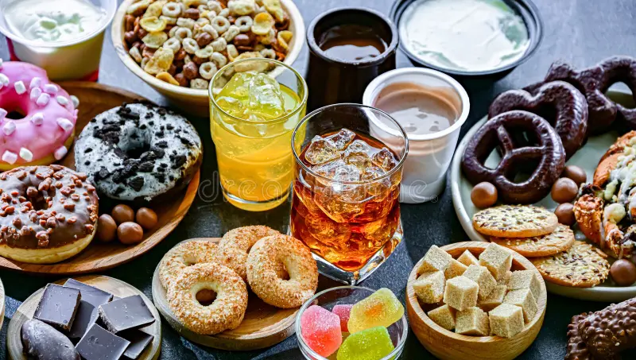

This was a unique project because it required me to identify data quality issues in their various products like beverages, snacks, baked goods,uncover performance gaps across the five major regions in Nigeria, and generate actionable insights that enabled leadership to improve decision-making, enhance operational efficiency, and optimize commercial performance. This analysis was performed using Excel.

This client-beauty and personal care brand contacted us to help them leverage their newly implemented relational database in SQL because their current team lacks the expertise.
After analysis we were able to discover how large their customer base is, the size of their product catalogue, and the most profitable product lines, the actual revenue generates and their overall performance
Nexus is a consumer electronic retail company experiencing volatile sales trends and margin erosion during high inflation. They required help to analyse their data to guide strategic decisions. This project helped improve profitability through SQL-driven analysis by understanding how inflation, GDP, promotions, and inventory influence business performance and decision making.
After analysis we were able to measure the impact of inflation on product demand, quantify capital locked in warehouse inventory, evaluate promotional effectiveness, identify seasonal demand patterns, detect slow-moving inventory, and improve inventory turnover and profitability